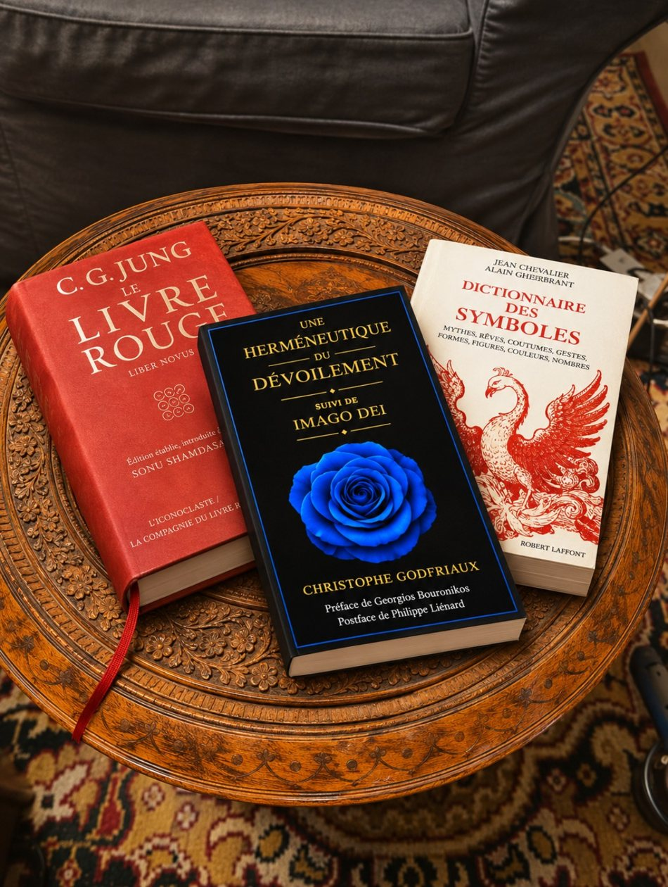

Qu'y a-t-il au-delà du premier voile ?
Une herméneutique du dévoilement — Imago Dei
De Christophe Godfriaux. Des récits anciens, des questions toujours actuelles, et la liberté d'emprunter son propre chemin.
Lecture symbolique des récits bibliques et des mythes · Psychologie analytique de Jung

La rose bleue, image d'un cheminement qui laisse place à l'ombre autant qu'à la lumière.
Devenir soi, sans épuiser le mystère.
La rose bleue symbolise le processus d’individuation. De même que ses pétales, dans toute leur complexité, s’organisent autour d’un même cœur, les différentes dimensions de notre être s’organisent autour d’un même centre : le Soi.
La rose évoque l’individuation ; le bleu, le mystère. Devenir soi n’exige pas que tout soit dévoilé.

Des histoires anciennes. Des questions vivantes.
Et si les récits que nous croyons connaître avaient encore quelque chose à nous dire ? Non comme des réponses définitives, mais comme des occasions de déplacer notre regard.
À travers une lecture nourrie par la psychologie analytique de Jung, Une herméneutique du dévoilement, suivi de Imago Dei, invite à rencontrer autrement les personnages et les symboles des récits bibliques et mythologiques.
Il ne s'agit ni de tracer un chemin obligatoire ni de promettre une révélation. Seulement de proposer des pistes, des rencontres, des questions. Le reste appartient à chaque lecteur.
Préface de Georgios Bouronikos · Postface de Philippe Liénard
Lire, c'est aussi se déplacer.
Sortir un instant de sa propre pensée pour entrer dans celle d'un autre. Découvrir d'autres couleurs à travers un nouveau prisme. Laisser le texte résonner avec sa propre histoire, sans chercher à abolir ce qui nous sépare.
Changer de regard
Approcher les récits anciens à travers une lecture psychologique, sans prétendre épuiser leur sens.
Accueillir la complexité
Reconnaître que lumière et ombre participent ensemble à l'expérience humaine.
Rester en mouvement
Recevoir des invitations à l'expérience, et garder la liberté de ses propres questions.
Un texte ne se réduit pas à ce que ses mots semblent dire. Plusieurs traditions nous invitent à explorer ses profondeurs, sans prétendre en épuiser le sens.
Explorer les niveaux de lectureUne pensée qui continue son chemin.
Un livre ne referme pas une pensée. Il lui donne parfois un point de départ. Des questions à habiter, des symboles à traverser, sans prétendre en fixer le terme.
L’Autre, cette terre sacrée
Je ne peux avoir conscience de moi sans l’Autre. Pourtant, il demeurera toujours une part de lui qui m’échappe. Du buisson ardent à la fenêtre de Johari, une réflexion sur le regard, la limite et la responsabilité.
Christophe Godfriaux
Analyste jungien · Formateur · Auteur
Son approche se nourrit de l'expérience vécue, de l'accompagnement et d'une réflexion sur les récits et les symboles.
Dans ce livre, il ne cherche pas à délivrer une vérité sur le chemin intérieur. Il partage un regard, une lecture en mouvement, et ouvre un espace où chacun peut faire résonner les textes avec sa propre histoire.
Une expertise assumée, sans prétendre connaître le chemin d'autrui.
Découvrir l'ouvrage
Choisis la boutique correspondant à ton pays. Les formats indiqués sont ceux communiqués par l'auteur.
Entrer en contact
Une question, un échange autour du livre, une proposition de rencontre ou d'intervention ?
Écrire à l'auteur